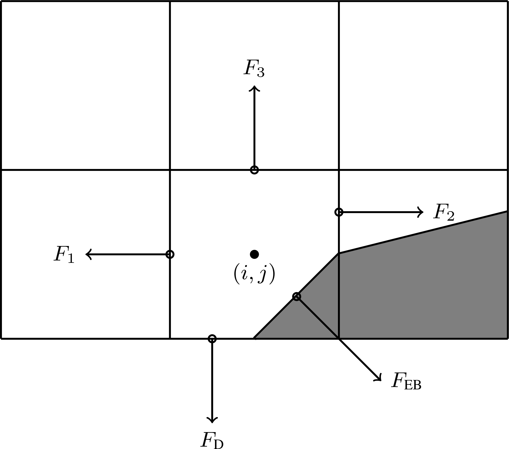
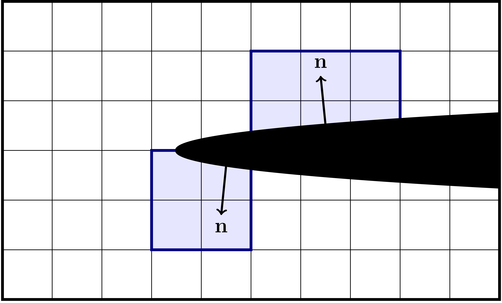
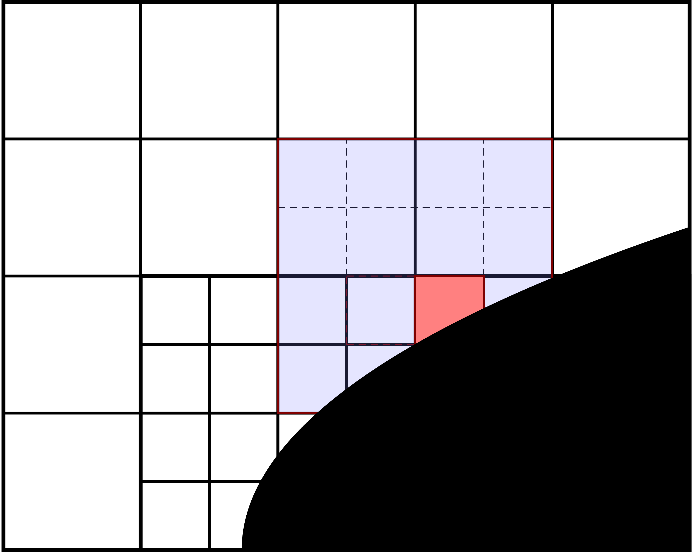
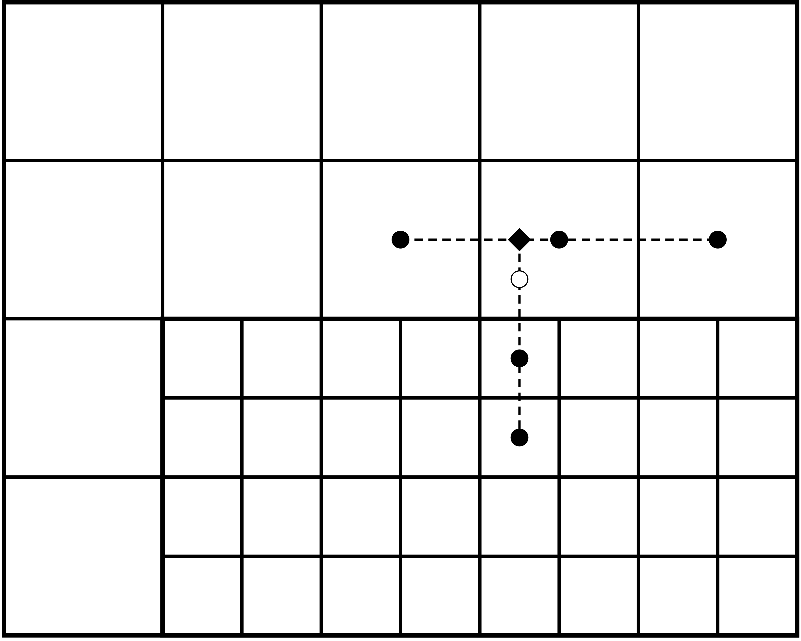
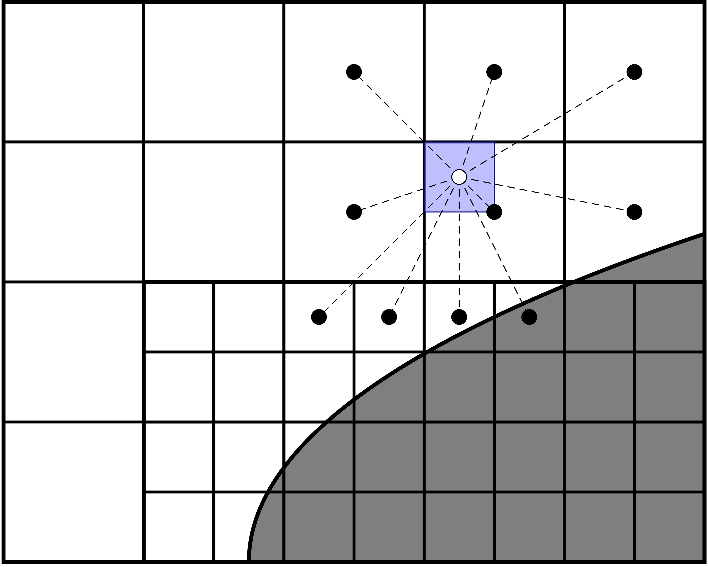
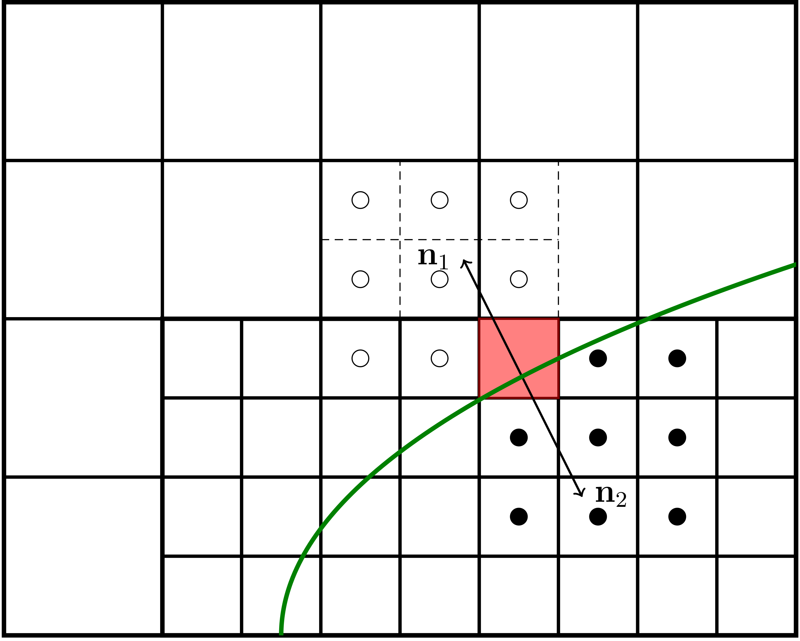

Linear solvers
Helmholtz equation
The Helmholtz equation is represented by
where \(\alpha\) and \(\beta\) are constants and \(a\left(\mathbf{x}\right)\) and \(b\left(\mathbf{x}\right)\) are spatially dependent and piecewise smooth.
To solve the Helmholtz equation, it is solved in the form
where \(L\) is the Helmholtz operator above. The preconditioning by the volume fraction \(\kappa\) is done in order to avoid the small-cell problem encountered in finite-volume discretizations on EB grids.
Discretization and fluxes
The Helmholtz equation is solved by assuming that \(\Phi\) lies on the cell-center. The \(b\left(\mathbf{x}\right)\)-coefficient is defined on face centers and EB faces, while \(a\left(\mathbf{x}\right)\) is defined on cell centers. In the general case the cell center might lie inside the embedded boundary, and the cell-centered discretization relies on the concept of an extended state. Thus, \(\Phi\) does not satisfy a discrete maximum principle.
{kind=link}

Fig. 17 Location of fluxes for finite volume discretization.
The finite volume update requires fluxes on the face centroids rather than the centers. These are constructed by first computing the fluxes to second order on the face centers, and then interpolating them to the face centroids. For example, the flux \(F_3\) in the figure above is
The other fluxes, such as \(F_2\) requires interpolation of face-centered fluxes to the face centroids.
Boundary conditions
The finite volume discretization of the Helmholtz equation requires fluxes through the EB and domain faces. Below, we discuss how these are implemented.
Note
chombo-discharge supports spatially dependent boundary conditions
Neumann
Neumann boundary conditions are straightforward since the flux through the EB or domain faces are specified directly. I.e., the fluxes \(F_{\textrm{EB}}\) and \(F_{\textrm{D}}\) are directly specified in Fig. 17.
Dirichlet
Dirichlet boundary conditions are more involved since only the value at the boundary is prescribed, but the finite volume discretization requires a flux. On the domain boundaries where there is no EB the fluxes are face-centered and we therefore use finite differencing for obtaining a second order accurate approximation to the flux at the boundary. If the EB intersects the domain side, we interpolate face-centered fluxes to face centroids.
On the embedded boundaries the flux is more complicated to compute, and requires us to compute an approximation to the normal gradient \(\partial_n\Phi\) at the boundary. Our approach is to approximate this flux by expanding the solution as a polynomial using a specified number of grid cells. By using more grid cells than there are unknowns in the Taylor series, we formulate an over-determined system of equations up to some specified order. As a first approximation we include only those cells in the quadrant or half-space defined by the normal vector, see Fig. 18. If we can not find enough equations, several fallback options are in place to ensure that we obtain a sufficient number of equations.
{kind=link}

Fig. 18 Examples of neighborhoods (quadrant and half-space) used for gradient reconstruction on the EB.
Once the cells used for the gradient reconstruction have been obtained, we use weighted least squares to compute the approximation to the derivative to specified order (for details, see Least squares). The result of the least squares computation is represented as a stencil:
where \(\Phi_{\textrm{B}}\) is the value on the boundary, the \(w\) are weights for grid points \(\mathbf{i}\), and the sum runs over cells in the domain.
Note that the gradient reconstruction can end up requiring more than one ghost cell layer near the embedded boundaries. For example, Fig. 19 shows a typical stencil region which is built when using second order gradient reconstruction on the EB. In this case the gradient reconstruction requires a stencil with a radius of 2, but as the cut-cell lies on the refinement boundary the stencil reaches into two layers of ghost cells. For the same reason, gradient reconstruction near the cut-cells might require interpolation of corner ghost cells on refinement boundaries.
{kind=link}

Fig. 19 Example of the region of a second order stencil for the Laplacian operator with second order gradient reconstruction on the embedded boundary.
Here, we rely on multigrid interpolation (see Multigrid ghost cell interpolation) to fill the required number of ghost cells.
Robin
Robin boundary conditions are in the form
where \(A\), \(B\), and \(C\) are constants. This boundary condition is enforced through the flux
which requires an evaluation of \(\Phi\) on the domain boundaries and the EB.
For domain boundaries we extrapolate the cell-centered solution to the domain edge, using standard first order finite differencing.
On the embedded boundary, we approximate \(\Phi\left(\mathbf{x}_{\text{EB}}\right)\) by linearly interpolating the solution with a least squares fit, using cells which can be reached with a monotone path of radius one around the EB face (see Least squares for details). The Robin boundary condition takes the form
Currently, we include the data in the cut-cell itself in the interpolation (and thus also use unweighted least squares to avoid forming an ill-conditioned system).
Multigrid ghost cell interpolation
With AMR, multigrid requires ghost cells on the refinement boundary. The interior stencils for the Helmholtz operator have a radius of one and thus only require a single layer of ghost cells (and no corner ghost cells). These ghost cells are filled using a finite-difference stencil, see Fig. 20.
{kind=link}

Fig. 20 Standard finite-difference stencil for ghost cell interpolation (open circle). We first interpolate the coarse-grid cells to the centerline (diamond). The coarse-grid interpolation is then used together with the fine-grid cells (filled circles) for interpolation to the ghost cell (open circle).
Embedded boundaries introduce many pathologies for multigrid:
Cut-cell stencils may have a large radius (see Fig. 19) and thus require more ghost cell layers.
The EBs cut the grid in arbitrary ways, leading to multiple pathologies regarding cell availability.
The pathologies mean that standard finite differencing fails near the EB, mandating a more general approach. Our way of handling ghost cell interpolation near EBs is to reconstruct the solution (to specified order) in the ghost cells, using the available cells around the ghost cell (see Least squares for details). As per conventional wisdom regarding multigrid interpolation, this reconstruction does not use coarse-level grid cells that are covered by the fine level.
Figure Fig. 21 shows a typical interpolation stencil for the stencil in Fig. 19. Here, the open circle indicates the ghost cell to be interpolated, and we interpolate the solution in this cell using neighboring grid cells (closed circles). For this particular case there are 10 nearby grid cells available, which is sufficient for second order interpolation (which requires at least 6 cells in 2D).
{kind=link}

Fig. 21 Multigrid interpolation for refinement boundaries away from and close to an embedded boundary.
Note
chombo-discharge implements a fairly general ghost cell interpolation scheme near the EB. The ghost cell values can be reconstructed to specified order (and with specified least squares weights).
Relaxation methods
The Helmholtz equation is solved using multigrid, with various smoothers available on each grid level. The currently supported smoothers are:
Standard point Jacobi relaxation.
Red-black Gauss-Seidel relaxation in which the relaxation pattern follows that of a checkerboard.
Multi-colored Gauss-Seidel relaxation in which the relaxation pattern follows quadrants in 2D and octants in 3D.
Chebyshev polynomial relaxation (see Chebyshev smoother below).
Restricted additive Schwarz (a block smoother, see Restricted additive Schwarz smoother below).
Users can select between the various smoothers in solvers that use multigrid.
Tip
Red-black Gauss-Seidel usually provides the best convergence rates. The multi-colored kernels are twice as expensive as red-black Gauss-Seidel relaxation in 2D, and four times as expensive in 3D, and tend to only marginally improve convergence rates.
Chebyshev smoother
The Chebyshev smoother is a polynomial (Chebyshev-Richardson) relaxation method that targets a prescribed window of the operator spectrum. A single invocation applies \(k\) Richardson steps
where \(D\) is the operator diagonal and the step sizes \(\omega_i\) are the reciprocals of the Chebyshev nodes on the eigenvalue window \([\lambda_{\textrm{max}}/r,\,\lambda_{\textrm{max}}]\).
Here \(k\) is the polynomial degree (order) and \(r\) is the eigenvalue ratio (eig_ratio), both supplied by the user.
The upper bound \(\lambda_{\textrm{max}}\) is estimated automatically from a Gershgorin bound on the Jacobi-preconditioned operator \(D^{-1}A\), and is therefore consistent with the operator coefficients (it equals \(2\) for a pure Laplacian and is smaller when the \(\alpha\)-term is present).
The Chebyshev smoother is selected through the smoother specification, e.g.
FieldSolverGMG.gmg_smoother = chebyshev 3 4.0
which selects polynomial degree \(k = 3\) and eigenvalue ratio \(r = 4.0\).
The same syntax is used by the other solvers that expose a gmg_smoother option.
Tip
A single Chebyshev invocation performs order operator applications, so gmg_smoother = chebyshev 3 4.0 with four pre/post smoothings costs roughly as much per V-cycle as twelve red-black smoothings.
The Chebyshev smoother is most useful with inexpensive (low-order) embedded-boundary stencils, where it reduces the number of V-cycles relative to Gauss-Seidel; with high-order boundary stencils Gauss-Seidel typically matches it at lower cost.
Restricted additive Schwarz smoother
The restricted additive Schwarz smoother is a block smoother whose blocks are the disjoint grid patches. Each outer invocation fills the ghost cells once and then performs a number of red-black Gauss-Seidel sweeps on every patch with the ghost cells held frozen (a Dirichlet, inexact local solve). Across patches the iteration is additive (block Jacobi), and since the blocks are disjoint the update is automatically restricted to the valid region; no additive damping is required.
The smoother is selected through the smoother specification, with the number of inner (frozen-ghost) sweeps as an argument, e.g.
FieldSolverGMG.gmg_smoother = ras 2
which performs two inner sweeps per outer relaxation.
The same syntax works for the other solvers that expose gmg_smoother (e.g. CdrCTU, CdrGodunov, EddingtonSP1).
Tip
The key property of this smoother is that it amortises the halo exchange (and, for the multiphase operator, the jump-boundary update) over the inner sweeps: it performs only one exchange per outer relaxation rather than one per colour. On communication-bound problems it therefore reaches a given multigrid convergence rate with fewer halo exchanges than point relaxation, even though it performs more operator applications per cycle. Over-solving each block (a large inner-sweep count) is counter-productive, because the additive coupling then over-commits to stale neighbour data; two inner sweeps is a good default.
Multiphase Helmholtz equation
chombo-discharge also supports a multiphase version where data exists on both sides of the embedded boundary.
The most common case is that involving discontinuous coefficients across the EB, e.g. for
where \(b\left(\mathbf{x}\right)\) is only piecewise constant. This is the natural boundary condition on a dielectric surface, for example.
Jump conditions
For the case of discontinuous coefficients there is a jump condition on the interface between two materials:
where \(b_1\) and \(b_2\) are the Helmholtz equation coefficients on each side of the interface, and \(n_1 = -n_2\) are the normal vectors pointing away from the interface in each phase. The jump factor is \(\sigma\), and can be thought of as the surface charge density on the dielectric.
Discretization
To incorporate the jump condition in the Helmholtz discretization, we use a gradient reconstruction to obtain an approximation of \(\Phi\) on the boundary, using Eq. 4. We then use this value to impose a Dirichlet boundary condition during multigrid relaxation. Recalling the gradient reconstruction \(\frac{\partial\Phi}{\partial n} = w_{\textrm{B}}\Phi_{\textrm{B}} + \sum_{\mathbf{i}} w_{\mathbf{i}}\Phi_{\mathbf{i}}\), the matching condition (see Fig. 22) can be written as
This equation can be solved for the boundary value \(\Phi_{\textrm{B}}\), which can then be used to compute the finite-volume fluxes into the cut-cells.
{kind=link}

Fig. 22 Example of cells and stencils that are involved in discretizing the jump condition. Open and filled circles indicate cells in separate phases.
Note
For discontinuous coefficients the gradient reconstruction on one side of the EB does not reach into the other (since the solution is not differentiable across the EB).
AMRMultiGrid
AMRMultiGrid is the Chombo implementation of the Martin-Cartwright multigrid algorithm.
It takes an “operator factory” as an argument, and the factory can generate objects (i.e., operators) that encapsulate the discretization on each AMR level.
chombo-discharge uses its own elliptic operators, and the user can use either of:
EBHelmholtzOpFactoryfor single-phase problems.MFHelmholtzOpFactoryfor multi-phase problems.
The source code for these are located in $DISCHARGE_HOME/Source/Elliptic.
Bottom solvers
Chombo provides (at least) three bottom solvers which can be used with AMRMultiGrid.
A regular smoother (e.g., point Jacobi).
A biconjugate gradient stabilized method (BiCGStab)
A generalized minimal residual method (GMRES).
The user can select between these for the various solvers that use multigrid. Typically, smoothers tend to work sufficiently well if one can coarsen sufficiently far, although improved convergence rates can occasionally be achieved by using a conjugate gradient solver. In each case, a simple smoother with a specified number of relaxations is applied as a preconditioner for the bottom solver.
Note
The bottom solver (gmg_bottom_solver) is the coarse-grid solver applied at the bottom of each V-cycle. It is unrelated to the top-level solver keyword described next, which selects whether the V-cycle is used stand-alone or as a preconditioner for an outer Krylov method.
Krylov-accelerated multigrid
By default the Helmholtz equation is solved by stand-alone multigrid V-cycling (solver = gmg), which is the cheapest option and the right choice whenever it converges well.
On hard problems, however, the V-cycle convergence rate can degrade or stall: strong coefficient contrast (e.g. high-permittivity dielectrics), awkward cut-cell geometry, deep AMR hierarchies, or nearly indefinite operators can all make multigrid converge slowly, hang (see gmg_exit_hang), or exhaust gmg_max_iter.
In these cases the multigrid cycle can instead be used as a preconditioner for an outer Krylov method, which removes the slowly-converging error modes that the smoother and coarse-grid correction cannot, and converges robustly where stand-alone multigrid does not:
FieldSolverGMG.solver = gmres # or 'bicgstab'
chombo-discharge ships its own GMRES and BiCGStab implementations for this purpose (in $DISCHARGE_HOME/Source/Elliptic); these are not the Chombo bottom solvers of the same name.
Both act directly on the AMR hierarchy: the matrix-vector product is the composite Helmholtz operator, and the preconditioner is the multigrid cycle, supplied through a thin adapter (AMRMultigridKrylovOp). The cycle type is deferred to the multigrid configuration (gmg_cycle) and is normally a V-cycle for efficiency.
The solve is carried out in residual-correction form, so inhomogeneous boundary conditions and dielectric jump/surface-charge contributions are handled correctly, and a non-zero initial guess (warm start) is honoured.
The multigrid preconditioner is configured exactly as for stand-alone multigrid (gmg_smoother, gmg_pre_smooth, gmg_cycle, gmg_bottom_solver, …); only the outer wrapper changes.
The same solver keyword is available on FieldSolverGMG (multiphase) and on the single-phase solvers CdrCTU, CdrGodunov, and EddingtonSP1.
The two methods implement:
GMRES (
gmres) – a restarted, right-preconditioned generalized minimal residual method, \(\textrm{GMRES}(m)\) with \(m =\)krylov_restart. It builds an orthonormal Krylov basis by Arnoldi iteration (classical Gram-Schmidt with reorthogonalization) and chooses, at each step, the correction that minimizes the residual over the current subspace; everykrylov_restartiterations the basis is discarded and the iteration restarts from the current solution. It is robust and is the recommended default. Its memory cost grows withkrylov_restart(it stores roughlykrylov_restartAMR-sized vectors), which can be significant on large grids.BiCGStab (
bicgstab) – a stabilized biconjugate-gradient method built on short recurrences. It uses a small, fixed amount of work storage independent of the iteration count, so it is cheaper in memory than GMRES and is often competitive in iteration count. Its recurrences can, however, break down (a near-zero inner product) on poorly-conditioned or strongly non-symmetric problems; the implementation restarts a bounded number of times on breakdown, but GMRES is the safer choice when robustness matters.
solver also accepts a space-separated fallback chain of any length (e.g. gmg bicgstab gmres): the listed solvers are attempted in order and the first that converges wins. Each attempt warm-starts from the previous attempt’s result only if that result reduced the residual below the chain’s initial residual; otherwise it falls back to the initial-residual solution, so a diverged attempt never pollutes the next solver’s initial guess. The idiomatic choice is
FieldSolverGMG.solver = gmg gmres
which runs cheap stand-alone multigrid and only pays for GMRES on the (hopefully rare) steps where multigrid fails to converge – giving the speed of multigrid with the robustness of a Krylov method.
When the chain begins with gmg and multigrid fails persistently (e.g. a fixed, hard field operator that the V-cycle cannot crack), retrying it first on every solve wastes a full failed V-cycle batch each time before the fallback even starts.
krylov_retry_interval governs this: after a multigrid failure the chain latches onto the Krylov solver and skips multigrid, re-probing it only every krylov_retry_interval solves and releasing the latch as soon as a re-probe converges.
The default 1 retries multigrid on every solve (no latching, the original behaviour); a large value approaches “switch to the Krylov solver and stay there”.
krylov_reprobe_iters adds an optional adaptive trigger on top: while latched, if the Krylov solver converges in that many iterations or fewer the preconditioner is evidently strong, so multigrid is re-probed on the next solve without waiting for the full interval.
The latch is counted in solves and is deliberately independent of regridding, so it behaves sensibly even when regrids are far more frequent than the desired re-probe cadence; the latch release (a re-probe that converges) is reported at gmg_verbosity >= 1.
Tip
Reach for the Krylov solvers when stand-alone multigrid is the bottleneck: if gmg_verbosity > 0 shows the V-cycle hanging, hitting gmg_max_iter, or converging at a poor rate that you cannot fix by adjusting the smoother, cycle type, or coarsening, switch to gmres (or the gmg gmres fallback chain).
Conversely, if pure multigrid already converges in a handful of V-cycles there is nothing to gain – the outer Krylov iteration only adds cost.
Tip
gmres is robust and the recommended default; raise krylov_restart if it stagnates (at the cost of memory) or lower it to save memory.
bicgstab uses a small, fixed amount of work storage but can break down on poorly-conditioned problems.
krylov_vcycles controls how many multigrid cycles make up one preconditioner application (usually 1); the cycle type is deferred to the multigrid configuration via gmg_cycle (V- or W-cycles), and should normally be a V-cycle for efficiency.
The solver key and the krylov_* keys are mandatory input parameters (like the gmg_* keys) and must be present in the input file; the shipped templates set solver = gmg.
Note
The Krylov convergence history is computed from a threaded floating-point reduction (the AMR inner product), so the printed residuals – and the solution at a finite tolerance – vary slightly from run to run. This is expected for parallel Krylov solvers; run single-threaded for bit-reproducibility.
Tuning multigrid performance
Multigrid coarsens the solution (and the geometry with it) over a hierarchy of grid levels and smooths the solution on each level. A number of factors influence its performance; often the most critical are the radius of the cut-cell stencils and how far multigrid is allowed to coarsen. Convergence is further improved by increasing the number of smoothings per level (up to a point) and by the choice of smoother and bottom solver.
The EBHelmholtzOp and MFHelmholtzOp operators are configured through ParmParse at run time.
All parameters below use a solver-class prefix (e.g. FieldSolverGMG, EddingtonSP1, CdrGodunov, CdrCTU); the generic gmg_ stem is shared across all solvers.
<Solver>.gmg_verbosity. Controls the multigrid verbosity; a value \(> 0\) prints multigrid convergence information.<Solver>.gmg_bottom_verbosity. Controls the bottom-solver verbosity; a value \(> 0\) prints bottom-solver convergence information (the detail depends on the bottom solver in use).<Solver>.gmg_use_default_settings. Use a known-robust set of default multigrid settings.Tip
Enabling this tends to make most problems converge, but potentially at suboptimal convergence rates.
<Solver>.gmg_pre_smooth. Controls the number of relaxations on each level during multigrid downsweeps.<Solver>.gmg_post_smooth. Controls the number of relaxations on each level during multigrid upsweeps.<Solver>.gmg_bott_smooth. Controls the number of relaxations before entering the bottom solve.<Solver>.gmg_min_iter. Sets the minimum number of multigrid V-cycles to perform, regardless of the residual.<Solver>.gmg_max_iter. Sets the maximum number of V-cycles before declaring convergence failure.<Solver>.gmg_exit_tol. Sets the exit tolerance for multigrid. Multigrid exits if \(r < \lambda r_0\), where \(\lambda\) is the specified tolerance, \(r = |L\Phi - \rho|\) is the residual, and \(r_0\) is the residual for \(\Phi = 0\).<Solver>.gmg_exit_hang. Sets the minimum permitted reduction in the convergence rate before aborting. Letting \(r^k\) be the residual after \(k\) multigrid cycles, multigrid will abort if \(r^{k+1} \geq (1-h)r^k\), where \(h\) is the hang factor.<Solver>.gmg_min_cells. Sets the minimum number of cells along any coordinate direction for coarsened multigrid levels. This controls how far multigrid will coarsen; e.g.gmg_min_cells = 16stops coarsening when the domain has 16 cells in any direction.<Solver>.gmg_bc_order. Sets the polynomial order (and stencil radius) for least-squares gradient reconstruction on embedded boundaries.<Solver>.gmg_bc_weight. Sets the least-squares stencil weighting factor for gradient reconstruction on EBs. See Least squares for details.<Solver>.gmg_jump_order. Sets the stencil order for least-squares gradient reconstruction at dielectric interfaces (multiphase problems only).<Solver>.gmg_jump_weight. Sets the least-squares stencil weighting factor for gradient reconstruction at dielectric interfaces. See Least squares for details.<Solver>.gmg_bottom_solver. Sets the bottom solver type:bicgstab,gmres, orsimple <N>whereNis the number of smoothings.<Solver>.gmg_cycle. Sets the multigrid cycle type:vcycleorwcycle. W-cycles do more coarse-grid work per cycle and can help when V-cycle convergence rates degrade, but are substantially more expensive per cycle in deep AMR hierarchies.<Solver>.gmg_smoother. Sets the multigrid smoother:jacobi,red_black,multi_color,chebyshev <order> <eig_ratio>(see Chebyshev smoother), orras(see Restricted additive Schwarz smoother).<Solver>.gmg_relax_factor. Sets the overall relaxation damping factor applied to each smoother update.<Solver>.gmg_reflux_free. Iftrue, use the reflux-free AMR operator. Rather than computing coarse- and fine-level fluxes separately and then applying a reflux correction, this variant fills the coarse-level coarse-fine interface fluxes by conservatively averaging the fine-level fluxes, which are themselves computed from the composite (CF-interpolated) solution. The two formulations are mathematically equivalent; neither is more accurate than the other. Default isfalse.<Solver>.solver. Selects the top-level solver:gmg(stand-alone multigrid),gmres, orbicgstab. The latter two use the multigrid cycle as a preconditioner. A space-separated list is a fallback chain tried in order, e.g.gmg gmres(see Krylov-accelerated multigrid). This key and thekrylov_*keys below are mandatory.<Solver>.krylov_eps. Relative residual tolerance for the outer Krylov solver (gmres/bicgstab).<Solver>.krylov_max_iter. Maximum number of outer Krylov iterations.<Solver>.krylov_restart. GMRES restart length (ignored forbicgstab).<Solver>.krylov_vcycles. Number of multigrid cycles applied per Krylov preconditioner application. The cycle type is deferred to the multigrid configuration viagmg_cycleand should normally be a V-cycle for efficiency.<Solver>.krylov_retry_interval. For agmg ...fallback chain: when stand-alone multigrid fails and the chain latches onto the Krylov solver, re-probe multigrid every this many solves (see Krylov-accelerated multigrid). Optional; defaults to1(retry multigrid first on every solve). Larger values skip the wasted multigrid attempt while it keeps failing.<Solver>.krylov_reprobe_iters. Adaptive early re-probe: while latched onto the Krylov fallback, re-probe multigrid on the next solve whenever the Krylov solver converged in this many iterations or fewer (a strong preconditioner suggests multigrid alone may now succeed). Optional; defaults to0(disabled, onlykrylov_retry_intervalapplies).
Warning
When gmg_bottom_solver is set to a regular smoother you must also specify the number of smoothings, e.g.
<Solver>.gmg_bottom_solver = simple 64. Using simple without a count is a run-time error.
The outer Krylov solver reuses the gmg_verbosity setting (there is no separate krylov_verbosity). With gmg_verbosity >= 1 a one-line convergence summary is printed for each Krylov solve (the relative residual rel.res, the absolute residual |r|, the zero-residual |r_zero|, the iteration count, and the exit status), and a message is printed whenever a fallback chain switches solver; the per-iteration residual history from the GMRES/BiCGStab solvers is printed at gmg_verbosity >= 4. The printed residuals are relative residuals – the true residual normalized by the zero-residual ||rhs - L(0)|| – so progress is on a common, solver-independent scale that is directly comparable to the convergence tolerance krylov_eps.
Note
The actual ParmParse prefix for these parameters is set by the top-level solver
(e.g., FieldSolverGMG, EddingtonSP1, CdrGodunov, CdrCTU).
Refer to the individual solver documentation for the exact prefix.